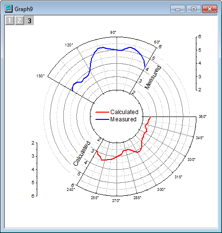
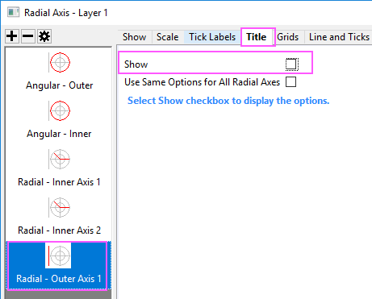

Polardiagramm mit mehreren Layern
polar-multi-layer
Zusammenfassung
Das Diagramm mit mehreren Layern erlaubt die Anordnung von verschiedenen Polardiagrammen mit verschiedenen Bereichen auf einer Diagrammseite. Dieses Diagramm wird erzeugt, indem zuerst 3 unabhängige Polardiagramme erstellt werden, die dann mit der Funktion Grafiken zusammenfügen zu einem Polardiagramm mit drei Layern kombiniert werden.
- 
Origin-Version mind. erforderlich: 2015 SR0
Was Sie lernen werden
Dieses Tutorial zeigt Ihnen, wie Sie:
- Winkel- und Radialachsen benutzerdefiniert anpassen.
- ein Diagramm mit neuen Daten duplizieren.
- ein Polardiagramm mit mehreren Layern erstellen.
- eine Legende für die gesamte Seite erstellen.
Schritte
Dieses Tutorial basiert auf der Datei Tutorial Data.opj im Verzeichnis <Origin-Verzeichnis>\Samples\.
Polardiagramm für die gemessenen Daten erstellen
- Öffnen Sie die Projektdatei Tutorial Data.opj und navigieren Sie zu dem Ordner Polar Graph with Multiple Layers. Klicken Sie doppelt auf die Arbeitsmappe Book26, um das Arbeitsmappenfenster zu öffnen.
- Markieren Sie die Spalte A und B und wählen Sie Zeichnen: Spezialisiert: Polar θ(X) r(Y) im Menü, um das Polardiagramm zu erstellen.

- Klicken Sie doppelt auf eine der Hilfsstrichsbeschriftungen der Winkelachse, um den Dialog aufzurufen. Gehen Sie für die Winkelachse zur Registerkarte Skalierung. Legen Sie die Skalierung der Winkelachsen mit den Werten Von 60 Bis 150 fest. Setzen Sie den Wert für Inkremente unter Große Hilfsstriche auf 30. Klicken Sie auf die Schaltfläche Anwenden, um die Änderungen im Diagramm anzuzeigen.
- Wechseln Sie zur Registerkarte Beschriftung der Hilfsstriche und stellen Sie sicher, dass Winkel - Äußere im linken Bedienfeld ausgewählt ist. Geben Sie auf der Unterregisterkarte Anzeige im Textfeld Suffix \(176) ein, um das Gradsymbol zu den Hilfsstrichsbeschriftungen der Winkelachse hinzuzufügen. Weitere Einzelheiten der unterstützten Textformatierungsbefehle finden Sie auf der Seite Escape-Sequenzen.
- Klicken Sie auf die Schaltfläche Neue Konfiguration, um den Dialog Konfiguration der Radialachsen zu öffnen.
- Aktivieren Sie das Kontrollkästchen Achsen innerhalb Polar und konfigurieren Sie es, wie unten gezeigt:
- Setzen Sie die Winkelliste auf Benutzerdefiniert.
- Geben Sie in dem Textfeld Wert die Zahlen 60 150 ein, um eine Achse bei 60 Grad und eine bei 150 Grad zu positionieren.
- Legen Sie die Optionen unter Achsen außerhalb Polar, wie unten gezeigt, fest:
- Wählen Sie Obere in der Auswahlliste Rechts, um eine Achse oben rechts vom Layerrahmen zu platzieren.
- Setzen Sie %s von Radius auf 0.
Klicken Sie auf OK, um diese Einstellungen anzuwenden.
- Gehen Sie zur Registerkarte Skalierung und wählen Sie Radial im linken Bedienfeld. Legen Sie die Radialachse auf Von = 2 und Bis = 6 fest. Ändern Sie den Wert des Inkrements für die Großen Hilfsstriche auf 1.
- Gehen Sie zur Registerkarte Beschriftung der Hilfsstriche und wählen Sie Radial - Innere 2 im linken Bedienfeld. Deaktivieren Sie das Kontrollkästchen Zeigen, um die Hilfsstrichsbeschriftungen für diese Achse zu verbergen.
- Gehen Sie zur Registerkarte Titel und wählen Sie Radial - Äußere 1 im linken Bedienfeld. Deaktivieren Sie das Kontrollkästchen Zeigen, um den Titel der äußeren Polarachse zu verbergen. Klicken Sie auf OK.
- 
- Klicken Sie zum Öffnen des Dialogs Details Zeichnung doppelt auf das Diagramm. Klicken Sie im linken Bedienfeld des Dialogs Details Zeichnung auf die Seite Graphn, um zur Seitenebene dieses Dialogs zu gelangen. Deaktivieren Sie auf der Registerkarte Legenden/Titel das Kontrollkästchen Aktiven Datensatz kennzeichnen, so dass das rote Feld um das Legendensymbol ausgeblendet wird.
- Erweitern Sie den Zweig Layer im linken Bedienfeld und wählen Sie die Zeichnung darunter. Ändern Sie auf der Registerkarte Linie im rechten Bedienfeld die Breite in 4 und die Farbe in Blau.
- Klicken Sie auf OK, um die benutzerdefinierten Anpassungen des ersten Polardiagramms fertigzustellen.

Polardiagramm mit den berechneten Daten duplizieren
- Klicken Sie mit der rechten Maustaste auf den Kopf des Polardiagramms, um das Kontextmenü aufzurufen. Wählen Sie Stapelzeichnen..., um den Dialog Stapelzeichnen zu öffnen. Wählen Sie Spalte in der Auswahlliste Stapelzeichnen mit. Markieren Sie Spalte C: Calculated und klicken Sie auf OK, um ein Polardiagramm mit Daten aus Spalte C zu duplizieren.
- Da der Datenbereich in Spalte C sich von Spalte B unterscheidet, wird eine Erinnerungsmeldung angezeigt, ob die Achsen des neuen Diagramms neu skaliert werden sollen, um alle Daten anzuzeigen. Belassen Sie die Option Ja ausgewählt und klicken Sie auf OK.
- Befolgen Sie Schritt 3 aus dem letzten Abschnitt, um die Skalierung der Winkelachsen festzulegen. Setzen Sie Von auf 240 und Bis auf 360 und das Inkrement der Großen Hilfsstriche auf 15.
- Wählen Sie auf der Registerkarte Skalierung Radial im linken Bedienfeld und legen Sie dann für Von den Wert 2, für Bis den Wert 6 und für das Inkrement der Großen Hilfsstriche den Wert 1 fest.
- Gehen Sie zur Registerkarte Zeigen.
- Wählen Sie Radial - Inneres 1 im linken Bedienfeld. Setzen Sie im Abschnitt Achsenposition den Wert (Grad) auf 240, um die erste innere Polarachse auf 240 Grad zu verschieben.
- Wählen Sie Radial - Inneres 2 im linken Bedienfeld. Setzen Sie den Wert (Grad) auf 360.
- Wählen Sie Radial - Äußeres 3 im linken Bedienfeld. Wählen Sie Links-Untere in der Auswahlliste Achse bei, um die äußere Achse in die untere linke Ecke des Layerrahmens zu verschieben.
Klicken Sie auf die Schaltfläche OK, um die benutzerdefinierte Anpassung der Achsen fertigzustellen. - Klicken Sie zum Öffnen des Dialogs Details Zeichnung doppelt auf das Diagramm. Setzen Sie die Farbe der Linie auf der Registerkarte Linie auf Rot und die Breite auf 4. Klicken Sie auf OK.

Polardiagramm mit Gitternetzen für den gesamten Bereich erstellen
- Öffnen Sie die Arbeitsmappe Book26.
- Markieren Sie Spalte D und klicken Sie auf die Schaltfläche Polar Theta(X) r(Y)
 auf der Symbolleiste 2D-Grafiken, um ein leeres Polardiagramm zu erstellen.
auf der Symbolleiste 2D-Grafiken, um ein leeres Polardiagramm zu erstellen. - Wiederholen Sie Schritt 3 aus dem Abschnitt Polardiagramm für die gemessenen Daten erstellen, um die Skalierung der Winkelachsen mit Von 0 Bis 360 festzulegen und das Inkrement mit dem Wert der großen Hilfsstriche auf 30 zu setzen.
- Gehen Sie zur Registerkarte Zeigen, wählen Sie Winkel - Äußere im linken Bedienfeld und deaktivieren Sie das Kontrollkästchen Zeigen. Wählen Sie dann im linken Bedienfeld Winkel - Inneres und aktivieren Sie das Kontrollkästchen Zeigen.
- Gehen Sie zur Registerkarte Beschriftung der Hilfsstriche, wählen Sie Winkel - Inneres im linken Bedienfeld und deaktivieren Sie das Kontrollkästchen Zeigen, um die Hilfsstrichsbeschriftungen der inneren Winkelachse zu verbergen.
- Wechseln Sie zur Registerkarte Gitternetze und stellen Sie sicher, dass Winkel im linken Bedienfeld ausgewählt ist. Deaktivieren Sie Zeigen in den Abschnitten Hauptgitternetzlinien und Nebengitternetzlinien.
- Wählen Sie auf der Registerkarte Skalierung Radial im linken Bedienfeld und ändern Sie die Werte der Skalierung in Von 2 Bis 6 fest und setzen Sie den Wert des Inkrements der Großen Hilfsstriche auf 1.
- Gehen Sie zur Registerkarte Zeigen, wählen Sie Radial - Äußere 1 und aktivieren Sie Gleiche Optionen für alle Radialachsen verwenden. Dies wendet die Einstellungen auf dieser Seite auch auf Radial - Äußere 2 an. Deaktivieren Sie dann das Kontrollkästchen Zeigen. Klicken Sie auf OK.
Diagramm mit mehreren Layern und einer Legende erstellen
- Wählen Sie bei aktivem Diagrammfenster Grafik: Grafikfenster zusammenfügen im Hauptmenü.
- Setzen Sie die Option Zusammenfügen auf Festgelegt und stellen Sie sicher, dass nur Graph1, Graph2 und Graph3 (die drei gerade neu erstellten Diagramme) im Textfeld Diagramme ausgewählt sind.
- Setzen Sie im Zweig Einstellungen Anordnung sowohl die Anzahl der Zeilen als auch die Anzahl der Spalten auf 1, damit die drei Diagramme sich überlagern.
- Aktivieren Sie das Kontrollkästchen neben Quelldiagramme verknüpfen.
- Setzen Sie im Zweig Seite einrichten die Breite und Höhe auf 15.
- Die Vorschau des Diagramms wird im rechten Bedienfeld angezeigt.
- Behalten Sie die restlichen Standardeinstellungen bei und klicken Sie auf OK.
- Klicken Sie mit der rechten Maustaste auf die Legende und wählen Sie im Kontextmenü Legende: Legende aktualisieren, um den Dialog zu öffnen.
- Setzen Sie den Aktualisierungsmodus auf Rekonstruieren, um eine neue Legende zu erstellen.
- Setzen Sie die Legende auf Eine Legende für gesamte Seite, um nur eine Legende für dieses Diagramm mit mehreren Layern zu erstellen.
- Setzen Sie die Ordnung auf Absteigend, um die Legende von Layer 2 über der Legende von Layer 1 anzuordnen.
- Setzen Sie den Automatischen Übersetzungsmodus der Legende auf @LA: Langname, um die Daten des Langnamens für die Legende zu verwenden. Klicken Sie auf OK.
- Klicken Sie mit der rechten Maustaste auf die neue Legende und wählen Sie Einstellungen, um den Dialog zu öffnen.
- Löschen Sie die erste Zeile im unteren Textfeld.
- Setzen Sie auf der Registerkarte Rahmen den Rahmen auf Kein. Klicken Sie auf OK.
- Ziehen Sie die Legende in die Mitte der inneren Winkelachse.
- Verwenden Sie das Textfeld Schriftgröße
 , um die Größe der Schrift auf diesem Diagramm zu ändern. Ziehen Sie die Hilfsstrichsbeschriftungen, um sie an eine geeignete Position zu verschieben.
, um die Größe der Schrift auf diesem Diagramm zu ändern. Ziehen Sie die Hilfsstrichsbeschriftungen, um sie an eine geeignete Position zu verschieben.
- Klicken Sie mit der rechten Maustaste auf einen der Titel der inneren Radialachse (Calculated oder Measured) und wählen Sie Einstellungen im Kontextmenü.
- Wählen Sie im aufgerufenen Dialog Objekteigenschaften auf der Registerkarte Rahmen die Option Kein in der Auswahlliste Rahmen. Dies löscht die Gitternetzlinien und andere Hintergrundelemente, so dass der Achsentitel leichter zu lesen ist. Klicken Sie auf OK.
- Wiederholen Sie die gleiche Operation für den Titel der anderen inneren Radialachse.
- Das Diagramm sollte am Ende folgendermaßen aussehen: